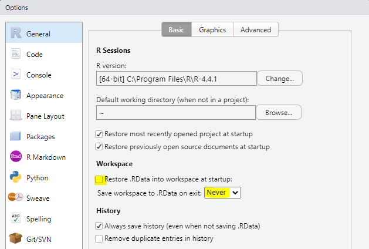

1 Projects, R Markdown, and Data Wrangling
Intended Learning Outcomes
By the end of this chapter you should be able to:
- Re-familiarise yourself with setting up projects
- Re-familiarise yourself with RMarkdown documents
- Recap and apply data wrangling procedures to analyse data
Individual Walkthrough
1.1 R and R Studio
Remember, R is a programming language that you will write code in and RStudio is an Integrated Development Environment (IDE) which makes working with R easier as it’s more user friendly. You need both components for this course.
If this is not ringing any bells yet, have a quick browse through the materials from year 1to refresh yopur memory.
1.1.1 R server
R and RStudio are already installed on the R server. We recommend using the server if your computer does not allow installation (e.g., a Chromebook), or if you have problems with installing R on your computer. Otherwise, you should consider installing R and RStudio on your own computer.
You will find the link to the server on Moodle.
1.1.2 Installing R and RStudio on your computer
Appendix A has detailed instructions on how to install R and RStudio on your own computer. There are also some links to a series of walkthroughs for installing R on different types of computers/ operating systems.
If you had R and RStudio installed on your own computer last year, we recommend updating to the latest versions. In fact, it might be good to do that at the start of each academic year. Detailed guidance can be found in Appendix B.
Once you have installed/updated R and RStudio, come back to this chapter.
1.1.3 Settings for Reproducibility
You should be doing things reproducibly, so that others (and your future self) can understand and check your work. That also allows you to reuse your work more easily.
You should always start with a clear workspace. Keeping anything in your Environment from a previous session means you can never be sure whether your current code is working or if your code is accessing a previously created object.
Hence, there are a few settings you should fix immediately after installing/updating RStudio, in
- uncheck the box that says
Restore .RData into workspace at startup to make sure no data from a previous session is loaded into the environment - set
Save workspace to .RData on exit toNever so that your workspace is not saved when you exit RStudio.
1.1.4 RStudio panes
RStudio has four main panes each in a quadrant of your screen:
- Source pane
- Environment pane
- Console pane
- Output pane
Do you remember what their purpose is?
The Source pane…Where are these panes located by default?
- The Source pane is located?
- The Environment pane is located?
- The Console pane is located?
- The Output pane is located?
If you were not quite sure about one/any of the panes, check out the materials from Level 1. If you want to know more about them, there is the RStudio guide on posit
1.2 Activity 1: Creating a new project
It’s important that we create projects every time we start a new project. It makes life easier in terms of folder locations and working directories, basically keeping all the data and the RMarkdown documents in one location.
Last year, you learnt how to create projects on the server, so you already know the steps. If cannot quite recall how that was done, go back to the Level 1 materials.
On your own computer, open RStudio, and complete the following steps in this order:
- Click on
File > New Project… - Then, click on “New Directory”
- Then, click on “New Project”
- Name the directory something useful (e.g., “2A_chapter1”), and save it in a location that makes sense, for example a dedicated folder you have for your level 2 Psychology labs - you can either select a folder you have already in place, or create a new one (e.g., I named my new folder “Level 2 labs”)
- Click “Create Project”. RStudio will restart itself and open with this new project directory as the working directory.
- You can also check in your folder structure that everything was created as intended

Why is the Colour scheme in the gif different?
In case anyone is wondering why my colour scheme in the gif above looks different to yours, I’ve set mine to “Pastel On Dark” in
Don’t nest projects
Don’t ever save a new project inside another project directory. This can cause some hard-to-resolve problems.
1.3 Activity 2: Data for this chapter
1.4 R Markdown basics
1.4.1 Creating an R Markdown file
delete everything after the knitting part from line 12
and save it in the project. All of the data files you need, should go into the same project folder too
1.4.2 Code Chunks vs Text
1.4.3 Knitting
1.5 Data Wrangling
The basic ones are the Wickham 6 that you’ve encountered already last year
table of the Wickham 6 refer them back to the different chapters where they encountered it in level 1
| Function | Description | Chapter |
|---|---|---|
| select() | Include or exclude certain variables (columns) | add links to final L1 chapters |
| filter() | Include or exclude certain observations/data (rows) | |
| mutate() | Creates new variables (columns) | |
| arrange() | Changes the order of observations (rows) | |
| group_by() | Organises the observations (rows) into groups | |
| summarise() | Create summary variables for groups of observations (rows) |
1.5.1 Brief recap of the Wickham 6
1.5.1.1 select
Massive dataframes use a lot of computing power - to reduce that, it would be worth focussing on the columns you need
selecting variables - you can rename them too if you don’t like the column name as is
if you wanna rename something at a later stage, use rename. Works in the same manner as select as in new name = old name. –> This could be in an information box
deselecting deselecting multiple variables
1.5.1.2 filter
text - one condition vs more than one condition numbers - smaller/ larger
1.5.1.3 arrange
ascending, descending - NAs will always listed at the end regardless
1.5.1.4 mutate
Allison’s drawing
1.5.1.5 group_by & summarise
1.6 Other useful functions
1.6.1 count
1.6.2 joining things together from separate datasets
inner_join
full_join
Use the 2 chopped up tables earlier and merge them. They have no values overlapping, so it’s difficult
1.7 Tidy data
1.7.1 pivoting data
pivot_wider and pivot_longer
1.7.2 recode
1.7.3 case_when
Allison’s drawing
Pair-coding in the lab
Test your knowledge and challenge yourself
or for the Wickham 6 part, we could just go here is some data, lets apply them all.
Activity 1: selecting specific columns First of all, we want to select the relevant columns